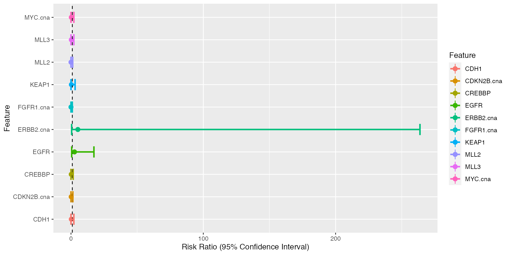
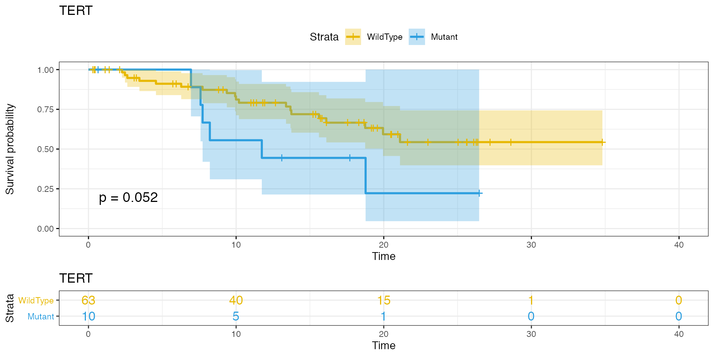

In this article we will cover functions integrated in gnomeR to analyze the outputed processed data of the binmat() function. We include in gnomeR the following functions for analysis:
gen.summary() which test for association between either categorical or continous outcomes and the set of genomic features from the binmat() output matrix. Returns a table with the distribution of the genomic features along the outcome specified, using adapted tests and adjustements for multiple testing to report significance. We further summarize the results using adequate plots.
uni.cox() which performs univariate assocition analysis between a time-dependent outcome and the set of genomic features from the binmat() output matrix. We perform this using Cox’s proportional hazard models with multiple test adjustements and summary plots.
In this first section we focus on the gen.summary() function, it takes the following arguments:
gen.dat a genomic dataframe outputed from binmat().outcome a leveled vector of length equal to the number of rows in gen.dat.filter a numeric value between 0 and 1 (1 not included) that is the lower bound for the proportion of patients having a genetic event. All features with an event rate lower than that value will be removed. Default is 0 (all features included).paired Boolean if the data are paired. Default is FALSE.cont Should the outcome be treated as a continuous value. Default is FALSE treated as categorical.rank Should the table returned be ordered by Pvalue. Boolean, default is TRUE.In the following analyses we will be using the following subset of samples:
set.seed(123)
samples <- as.character(unique(mut$Tumor_Sample_Barcode))[sample(1:length(unique(mut$Tumor_Sample_Barcode)), 100, replace=FALSE)]
df <- binmat(patients = samples,maf = mut, fusion = fusion, cna = cna, cna.binary = FALSE)For this example we will be using the recorded sample type of the samples we randomly selected above. Thus looking for differences between primary and metastatic samples:
outcome <- as.character(clin.sample$Sample.Type[match(samples,clin.sample$Sample.Identifier)])
test <- gen.summary(gen.dat = df,
outcome = outcome,
filter = 0.05,paired = FALSE,
cont = FALSE,rank = TRUE)Using the Fisher’s exact test the gen.summary() function returns the following:
fits a summary table of the distribution of features across outcomes and the test performed
kable(test$fits[1:10,])| Feature | Overall | Metastasis(N=55) | Primary(N=45) | OddsRatio | Pvalue | FDR | Lower | Upper | |
|---|---|---|---|---|---|---|---|---|---|
| FGFR1.cna | FGFR1.cna | 12% | 21.82% | 0% | 0 | 3.12e-02 | 8.36e-01 | 0 | 0.99 |
| CDKN2B.cna | CDKN2B.cna | -12% | -3.64% | -22.22% | 0.15 | 8.75e-02 | 8.36e-01 | 0 | 1.42 |
| CREBBP | CREBBP | 7% | 10.91% | 2.22% | 0.19 | 1.25e-01 | 8.36e-01 | 0 | 1.64 |
| ERBB2.cna | ERBB2.cna | 10% | 3.64% | 17.78% | 5.19 | 1.71e-01 | 8.36e-01 | 0.49 | 263.77 |
| MLL3 | MLL3 | 6% | 9.09% | 2.22% | 0.23 | 2.19e-01 | 8.36e-01 | 0 | 2.17 |
| CDH1 | CDH1 | 6% | 9.09% | 2.22% | 0.23 | 2.19e-01 | 8.36e-01 | 0 | 2.17 |
| MYC.cna | MYC.cna | 12% | 18.18% | 4.44% | 0.23 | 2.19e-01 | 8.36e-01 | 0 | 2.17 |
| EGFR | EGFR | 9% | 5.45% | 13.33% | 2.64 | 2.92e-01 | 8.36e-01 | 0.52 | 17.34 |
| KEAP1 | KEAP1 | 5% | 7.27% | 2.22% | 0.29 | 3.75e-01 | 8.36e-01 | 0.01 | 3.1 |
| AR | AR | 5% | 7.27% | 2.22% | 0.29 | 3.75e-01 | 8.36e-01 | 0.01 | 3.1 |
forest.plot a forest plot of the most significant features
test$forest.plot
vPlot a volcano plot summarising the odds ratios and pvalues of the the features included in the test
test$vPlotIn this section we show to use the gen.summary() function with a continuous outcome. Given the lack of continuous variables in the IMPACT clinical set we show an example here with a simulate continuous gaussian outcome. We perform this using linear regression.
set.seed(1)
outcome <- rnorm(n = nrow(df))
tab.out <- gen.summary(gen.dat = df,
outcome = outcome,
filter = 0.05,paired = FALSE,
cont = TRUE,rank = TRUE)This returns the following:
fits a summary of the univariate fits that were performed
kable(tab.out$fits[1:10,])| Estimate | SD | Pvalue | MutationFreq | FDR | |
|---|---|---|---|---|---|
| 37 | -0.34 | 0.19 | 0.0755 | 0.12 | 9.57e-01 |
| 5 | 0.71 | 0.41 | 0.0830 | 0.05 | 9.57e-01 |
| 9 | 0.70 | 0.41 | 0.0916 | 0.05 | 9.57e-01 |
| 8 | 0.61 | 0.38 | 0.1080 | 0.06 | 9.57e-01 |
| 7 | -0.53 | 0.38 | 0.1590 | 0.06 | 9.57e-01 |
| 13 | 0.44 | 0.41 | 0.2900 | 0.05 | 9.57e-01 |
| 1 | 0.19 | 0.19 | 0.3080 | 0.38 | 9.57e-01 |
| 20 | -0.36 | 0.41 | 0.3890 | 0.05 | 9.57e-01 |
| 21 | 0.28 | 0.35 | 0.4240 | 0.07 | 9.57e-01 |
| 33 | 0.14 | 0.19 | 0.4540 | -0.12 | 9.57e-01 |
vPlot a volcano plot summarising the coefficient and pvalues of the the features included in the test
tab.out$vPlotThe univariate survival analysis can be performed using the uni.cox() function, it takes the following arguments:
X a matrix/surv.datframe of genomic features, continuous or binary (note cannot handle categorical surv.dat for the moment).surv.dat a survival dataframe containing the survival information. This can be made of 2 or 3 columns. 1 or 2 for time, and one for status (where 1 is event and 0 is no event).surv.formula a survival formula with names matching those in surv.dat eg: Surv(time,status)~.filter a numeric value between 0 and 1 (1 not included) that is the lower bound for the proportion of patients having a genetic event. All features with an event rate lower than that value will be removed. Default is 0 (all features included).genes a character vector of gene names that will be the only ones to be kept. Default is NULL, all genes are used.Here we show an example using the survival data included in the IMPACT clinical dataset:
surv.dat <- clin.patients %>%
filter(X.Patient.Identifier %in%
abbreviate(samples,strict = TRUE, minlength = 9)) %>%
select(X.Patient.Identifier,Overall.Survival..Months.,
Overall.Survival.Status) %>%
rename(DMPID = X.Patient.Identifier,
time = Overall.Survival..Months.,
status = Overall.Survival.Status) %>%
mutate(time = as.numeric(as.character(time)),
status = ifelse(status == "LIVING",0,1)) %>%
filter(!is.na(time))
X <- df[match(surv.dat$DMPID,
abbreviate(rownames(df),strict = TRUE, minlength = 9)),]
test <- uni.cox(X = X, surv.dat = surv.dat,
surv.formula = Surv(time,status)~.,filter = 0.1)This returns the following:
tab a summary of the univariate fits that were performed
kable(test$tab[1:5,])| Feature | Coefficient | HR | Pvalue | FDR | MutationFrequency |
|---|---|---|---|---|---|
| TERT | 0.89 | 2.44 | 0.059 | 0.354 | 0.14 |
| MLL | 0.70 | 2.01 | 0.203 | 0.458 | 0.11 |
| TP53 | 0.49 | 1.63 | 0.229 | 0.458 | 0.36 |
| PIK3CA | 0.38 | 1.46 | 0.447 | 0.671 | 0.14 |
| KRAS | -0.42 | 0.66 | 0.568 | 0.682 | 0.14 |
p an interactive volcano plot summarizing the hazard ratio for each ratio as a function of it’s p-value
test$pKM a list of Kaplan-Meier plots for the 10 most significant features
test$KM[[1]]